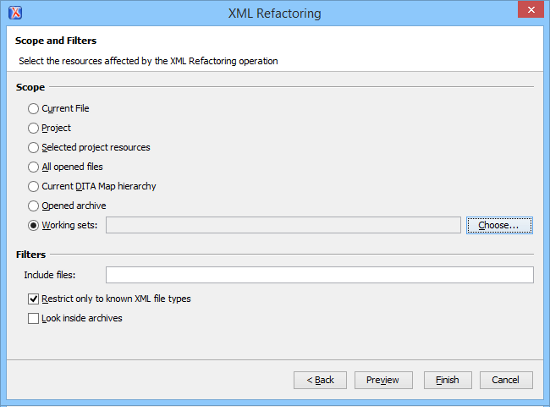

Refactoring XML Documents
In the life cycle of XML documents there are instances when the XML structure needs to be changed to accommodate various needs. For example, when an associated schema is updated, an attribute may have been removed, or a new element added to the structure.
These types of situations cannot be resolved with a traditional Find/Replace tool, even if the tool accepts regular expressions. The problem becomes even more complicated if an XML document is computed or referenced from multiple modules, since multiple resources need to be changed.
To assist you with these types of refactoring tasks, Oxygen XML Editor includes a specialized XML Refactoring tool that helps you manage the structure of your XML documents.
XML Refactoring Tool
The XML Refactoring tool is presented in the form of an easy to use wizard that is designed to reduce the time and effort required to perform various structure management tasks. For example, you can insert, delete, or rename an attribute in all instances of a particular element that is found in all documents within your project.
 XML Refactoring action from one of the following
locations:
XML Refactoring action from one of the following
locations:- The Tools menu.
- The Refactoring submenu from the contextual menu in the Project view.
- The Refactoring submenu from the contextual menu in the DITA Maps Manager view.
XML Refactoring Wizard
- Refactoring operations
-
The first wizard page presents the available operations, grouped by category. To search for an operation, you can use the filter text box at the top of the page.
Figure 1. XML Refactoring Wizard 
- Configure Operation Parameters
-
The next wizard page allows you to specify the parameters for the refactoring operation. The parameters are specific to the type of refactoring operation that is being performed. For example, to delete an attribute you need to specify the parent element and the qualified name of the attribute to be removed.
Figure 2. XML Refactoring 2nd Wizard Page (Delete Attribute Operation) 
- Scope and Filters
-
The last wizard page allows you to select the set of files that represent the input of the operation.
Figure 3. XML Refactoring - Scope and Filters Wizard Page - Scope section
- In the Scope section, you can select from predefined resource sets (such as the current file, your whole project, the current DITA map hierarchy for DITA projects, etc.) or you can define your own set of resources by creating a working set.
- Filters
- The Filters section includes the following
options:
- Include files - Allows you to filter the selected resources by using a file pattern. For example, to restrict the operation to only analyze build files you could use build*.xml for the file pattern.
- Restrict only to known XML file types - When selected, only resources with a known XML file type will be affected by the operation.
- Look inside archives - When selected, the resources inside archives will also be affected.
- Preview
- You can use the Preview button to open a comparison panel where you can review all the changes that will be made by the refactoring operation before applying the changes.
- Finish
- After clicking the Finish button, the operation will be processed and Oxygen XML Editor provides no automatic means for reverting the operations. Any Undo action will only revert changes on the current document.
 Stop button in the progress bar to cancel the operation.
Stop button in the progress bar to cancel the operation.